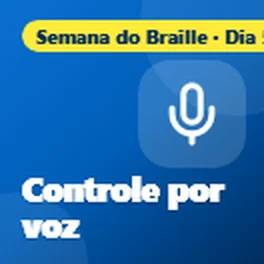
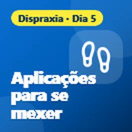
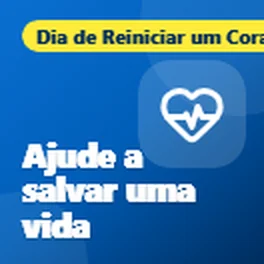
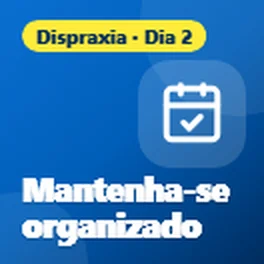
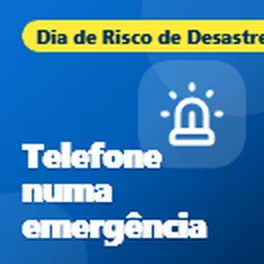
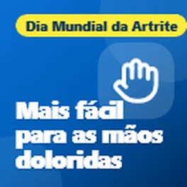

Esta página foi traduzida automaticamente. Se algo não estiver bem, diga-me.
Dicas de tecnologia gratuitas para Bridlington e o East Riding
Ajuda simples com telemóveis, computadores e como ficar seguro online. Gratuito, sem nada para se inscrever.
Últimas dicas

Control your phone with your voice
It's day five of National Braille Week, and today I wanted to share how you can control your phone using just your voice.

Dispraxia: ajuda para adultos e estudantes
É o último dia da Semana de Consciencialização da Dispraxia, e eu queria terminar partilhando algum apoio para adultos e estudantes, porque a dispraxia não para...

Tem um pingente ou um alarme de queda? Verifique agora
Queria partilhar algo importante para qualquer pessoa que tenha um alarme pessoal, como um pingente ou um alarme de queda, que funcione através da linha telefónica da sua casa.
Livros e TV gratuitos que você pode ouvir
É o quarto dia da Semana Nacional do Braille, e as dicas de hoje são sobre livros, rádio e TV que você pode desfrutar ouvindo.
Ferramentas gratuitas para cortar as contas de internet e telefone
Hoje é o Dia Internacional da Erradicação da Pobreza, por isso eu queria partilhar algumas ferramentas gratuitas que podem ajudar você a reduzir o custo da sua internet...
Dispraxia: tecnologia para se locomover
É o sexto dia da Semana de Consciencialização da Dispraxia, e hoje eu queria partilhar alguma tecnologia que ajuda a se locomover.
Deixe o seu telemóvel ler para si
É o terceiro dia da Semana Nacional do Braille, e hoje eu queria partilhar algumas maneiras gratuitas de fazer o seu telemóvel ou computador ler coisas em voz alta para si.

Dispraxia: aplicações para se mover
É o quinto dia da Semana de Consciencialização da Dispraxia, e as dicas de hoje são todas sobre se mover.

Economize dinheiro na comida com o seu telemóvel
Hoje é o Dia Mundial da Alimentação, por isso queria partilhar alguns aplicações gratuitas que podem ajudar a poupar dinheiro na comida e a evitar que a boa comida se desperdice.

Aplicações gratuitas que podem ajudar a poupar uma vida
Hoje é o Dia de Reiniciar um Coração, por isso queria partilhar algumas aplicações e websites gratuitos que podem ajudar a aprender a fazer RCP e estar prontos para ajudar se alguém parar de bater o coração.
Mover-se com perda de visão
É o segundo dia da Semana Nacional do Braille, e hoje também é o Dia da Segurança da Bengala Branca, por isso queria partilhar algumas aplicações gratuitas que ajudam pessoas com perda de visão...
Dispraxia: ferramentas que facilitam a leitura
É o quarto dia da Semana de Consciencialização da Dispraxia, e hoje queria partilhar algumas ferramentas gratuitas que facilitam a leitura.

Recebeu uma mensagem sobre um pacote não recebido?
Queria partilhar um aviso sobre mensagens falsas de entrega de encomendas, pois são um dos golpes mais comuns neste momento.
Dispraxia: quando a escrita é difícil
É o terceiro dia da Semana de Consciencialização da Dispraxia, e as dicas de hoje são para quem encontra a escrita difícil.
Está com dificuldades em ler o seu telemóvel?
Esta semana é a Semana Nacional do Braille, por isso queria partilhar algumas funcionalidades gratuitas no seu telemóvel que podem fazer uma grande diferença se a sua visão não for o que...
Tem um telemóvel ou portátil antigo numa gaveta?
Hoje é o Dia Internacional de Resíduos Eletrónicos, um bom lembrete sobre todos aqueles telemóveis, tablets e portáteis antigos que estão na gaveta. A maioria de nós tem...

Dispraxia: ferramentas para se organizar
É o segundo dia da Semana de Consciencialização da Dispraxia, e hoje eu queria partilhar algumas ferramentas gratuitas que ajudam a manter a organização.

O seu telemóvel pode ajudar numa emergência
Hoje é o Dia Internacional da Redução do Risco de Desastres, por isso queria partilhar alguns recursos do seu telemóvel que podem realmente ajudar numa emergência....

Mãos doloridas? Deixe o seu telemóvel e portátil fazer o trabalho
Hoje é o Dia Mundial da Artrite, por isso queria partilhar alguns recursos do seu telemóvel e portátil que podem facilitar muito a vida se tiver dores, rigidez ou...
Tecnologia que ajuda as crianças a aprender, não a depender dela
Esta semana é a Semana de Consciencialização da Dispraxia, por isso queria partilhar algumas formas como a tecnologia pode ajudar as crianças com dispraxia. A ideia é usar a tecnologia para ajudá-las...
Faça o seu telemóvel trabalhar para o seu bem-estar
O Dia Mundial da Saúde Mental foi a 10 de Outubro, por isso queria partilhar algumas coisas simples que o seu telemóvel já pode fazer para o ajudar a sentir-se um pouco mais calmo e mais...
O que você ama, há uma comunidade para isso
Queria partilhar algo que muitas pessoas não percebem que existe.

Anúncios a aparecer do nada?
Continuando da minha publicação sobre anúncios pop-up assustadores, eis o que fazer se anúncios continuarem a aparecer no seu telemóvel Android mesmo quando não está a usar nenhum aplicativo.

Pop-up assustador no seu telemóvel? É apenas um anúncio
Queria partilhar uma dica sobre aqueles pop-ups assustadores que por vezes aparecem nos telemóveis.
O seu GPS está desatualizado?
Aqui está uma dica rápida para quem ainda usa um GPS no carro.
Selecionado para os Prêmios Time2Volunteer 2026
Queria partilhar uma notícia. Fui recentemente pré-selecionado para os Prêmios Time2Volunteer 2026 pelo voluntariado que faço com um suporte técnico local...

Fatos simples para manter o seu computador seguro
Queria partilhar algumas dicas sobre como manter o seu computador seguro, porque muitas pessoas acabam a pagar por antivírus que na verdade não precisam.
O que é um código QR?
Só queria partilhar uma dica rápida sobre códigos QR.
Verifique os seus temporizadores de aquecimento e água quente
Com o tempo mais frio a chegar, agora é uma boa altura para verificar os seus temporizadores de aquecimento e água quente.
Teste o seu aquecimento antes do inverno
Com o inverno a chegar, agora é uma boa altura para testar o seu aquecimento, especialmente se não foi usado muito este ano.
Navegue por dicas por tópico
- Golpes e como se manter seguro (4)
- Health and wellbeing (15)
- Dinheiro (2)
- Conectar-se e ficar online (2)
- Notícias (1)
- Tecnologia do dia a dia (6)
O que as pessoas dizem
Muito obrigado, senhor
Sim, sem dúvida útil, obrigado. Vou partilhar com quem eu ache que as suas dicas possam ajudar 😃
Útil, obrigado
Receba novas dicas por e-mail
Um e-mail curto quando publico uma dica nova. Gratuito, e pode cancelar a qualquer momento.
Vai receber um e-mail para confirmar. Os e-mails são enviados por follow.it e cada um tem uma ligação para cancelar a subscrição.